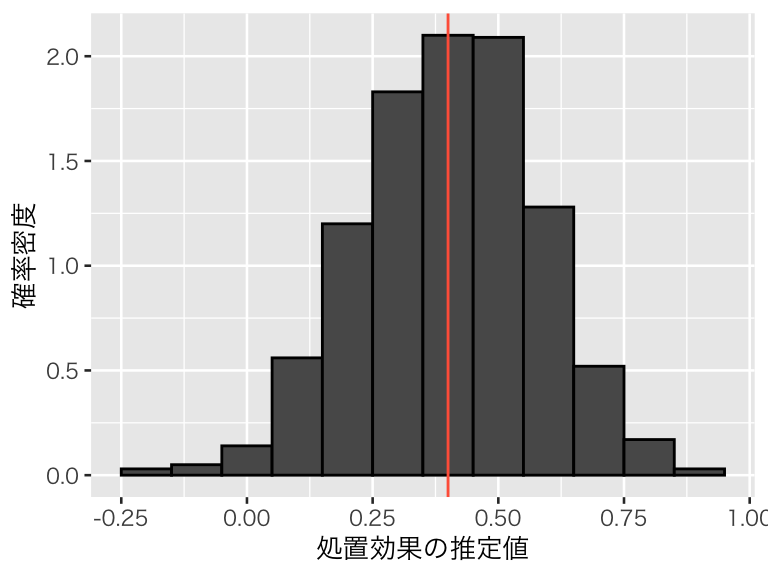
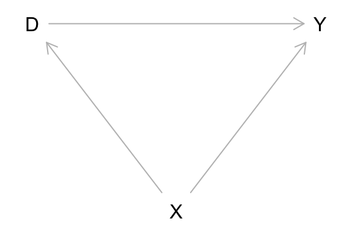
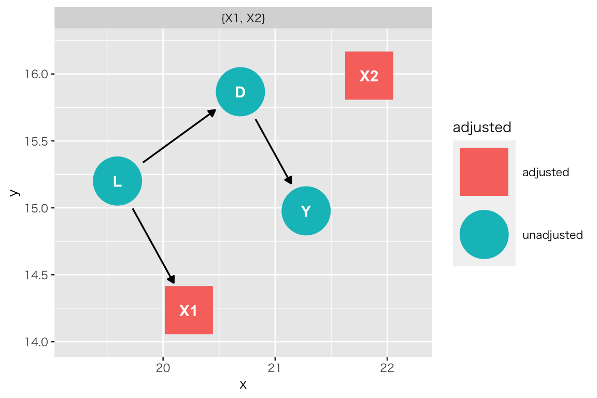

Topic 4 回帰分析
- トピック4の講義スライド (PDF, 1.4MB)
4.1 準備
4.1.1 予習、講義動画、実習課題
このトピックでやるべきことは、以下のとおりである。
- シラバス(PDFファイル) に記載されているトピック4の予習課題を読む。
- KUTLMS (Moodle) にあるトピック4の講義動画を視聴する。
- この資料の続きを読み、Rを使った実習を行うことで、回帰分析の理解を深める。特に、因果推論で回帰分析を使う意味を理解する。
- まず、書いてあるコードをそのまま実行する。
- 自分で数字（シミュレーションの条件）を変えて、結果がどう変わるか研究する（課題）。
- 教科書 (安井 2020) 第2章のRを使った分析を自分でやってみる。
- 課題を提出する。
このトピックの説明は、以下の事項を理解しているという前提で書かれている。
- 回帰直線とは何か
- 回帰係数とは何か
- Rで回帰分析を実行する方法
lm()の使い方broom::tidy()の使い方- 推定結果の読み方
これらの理解に不安がある場合は、浅野 and 矢内 (2018) の第10–14章や計量経済学の講義資料 などを参照されたい。より厳密な説明は、計量経済学の教科書（たとえば、Angrist and Pischke (2009) の第3章、 Hansen (2020) の第2章から第5章、 縄田 (2013) の第6章、西山 et al. (2019) の第6章、末石 (2015) の第1章など）を参照。
注意： 下の説明では、replicate() でシミュレーションを繰り返す回数を1,000 に設定しているが、自分の環境合わせて調整するように。あまり処理能力が高くないパソコンを使っている場合は、繰り返し回数を少なめ（例えば、500）にしたほうがよい。シミュレーションの結果を安定させたいなら、繰り返し回数をさらに大きくしたほうが良い。また、set.seed() で指定する値は適宜変えるように。
4.1.2 Rパッケージの読み込み
必要なパッケージを読み込み、作図用の日本語フォントを設定する。
pacman::p_load(tidyverse, ggbeeswarm, broom, patchwork,
dagitty, ggdag)
theme_set(theme_gray(base_size = 10, base_family = "HiraginoSans-W3")) # macOS用
#theme_set(theme_gray(base_size = 10, base_family = "Meiryo")) # Windows用
#theme_set(theme_gray(base_size = 10, base_family = "ipaex")) # Ubuntu用
#showtext::showtext_auto() # Cloud用
#theme_set(theme_gray(base_size = 10, base_family = "noto")) # Cloud用4.1.4 このトピックで使うRコードの説明
4.1.4.1 weighted.mean()
weighted.mean()は加重平均を計算する。
10と20の単純な算術平均は
## [1] 15である。A と B の重みを 5:2 にする。
この重みを使って加重平均を計算する。
## [1] 12.85714これは、
## [1] 12.85714である。つまり、
## [1] 12.85714である。
4.1.4.2 purrr::map()と sapply()
purrr::map() は、関数をリストまたはベクトルの各要素に適用し、リストを返す。
sapply() も同様の働きをするが、返り値を単純なもの（次元が低いもの）にできる場合には単純化して値を返してくれる。例えば、各要素の長さが1で全体の長さが L のリストを返す代わりに、長さ L のベクトルを返す。
（実は、 sapply() は lapply() を simplify = TRUE として使っているだけである。）
例として、ある数を s 倍にする関数を作る。s の既定値は10にする。
この関数は、次のように使う。
## [1] 50## [1] 40この関数を、あるベクトルの各要素に対して使いたいとする。まず、対象となるベクトルを作る。
## [1] 1 2 3 4 5 6 7 8 9 10このベクトルの各要素に関数を適用する。まずは、for ループでやってみる。
res_for <- rep(NA, length(vec1)) # 結果を保存するベクトル
for (i in seq_along(vec1)) {
res_for[i] <- multiply_s(vec1[i])
}
res_for## [1] 10 20 30 40 50 60 70 80 90 100これを purrr::map() で実行すると、次のように書ける。%>% print() は結果を表示するために使っているだけなので、表示しなくていいなら不要（以下も同じ）。
## [1] 10 20 30 40 50 60 70 80 90 100このように、map() は、map(.x = 対象となるベクトルまたはリスト, .f = 適用する関数, .x 以外の引数) という形式で使う。map() はリストを返すので、ここではリストをベクトルにするために unlist() を使っている。
使用する関数の引数も指定できる。multiply_s() で s = 20 を指定する。
## [1] 20 40 60 80 100 120 140 160 180 200この例の場合には、sapply() を使うほうが簡単である。sapply() は sapply(X = ベクトル, FUN = 適用する関数, X以外の引数) というように使う。X に指定できるのはベクトルであり、結果もベクトルで返される。
## [1] 20 40 60 80 100 120 140 160 180 200map() はリストに対しても同様に使える。
まず、データを生成する関数を作る。
dgp_example <- function(N = 100) {
X <- runif(N, min = 0, max = 1)
Y <- rnorm(N, mean = 0.6 * X, sd = 1)
return(tibble(X, Y))
}この関数を使って、N = 50 のデータセットを100個作る。
## [1] "list"このリストに含まれる100個のデータセットのそれぞれで、lm() を使った回帰分析を実行する。
fit_list の各要素が、lm() で回帰分析を行った結果になっている。例えば、32番目のデータセットを使った結果は、
## # A tibble: 2 x 5
## term estimate std.error statistic p.value
## <chr> <dbl> <dbl> <dbl> <dbl>
## 1 (Intercept) 0.0585 0.277 0.211 0.834
## 2 X 0.714 0.494 1.44 0.155である。
sapply() も使えるが、結果が行列になって使いにくいので、この場合には lapply() を使ったほうが良い。
32番目のデータセットを使った結果は
## # A tibble: 2 x 5
## term estimate std.error statistic p.value
## <chr> <dbl> <dbl> <dbl> <dbl>
## 1 (Intercept) 0.0585 0.277 0.211 0.834
## 2 X 0.714 0.494 1.44 0.155で、上と同じ結果が出る。
map() や sapply()（あるいはその他の apply 系関数）では、適用する関数に無名関数 (anonymous function) を
使うことができる。無名関数とは、その名の通り名前がついていない関数である。簡単にいうと、使う時点でまだ関数として定義されていないものである。
例えば、1から10の整数ベクトルの各要素に、それぞれの数に2を足した数をかける、つまり、
\[
f(x) = x (x + 2) = x^2 + 2x
\]
を計算してみる。ただし、関数はあらかじめ定義せず、無名関数を使う。
map() の場合：
## [1] 3 8 15 24 35 48 63 80 99 120このように、.f のところに関数自体を書いてしまえばよい。
sapply() の場合：
## [1] 3 8 15 24 35 48 63 80 99 120とできる。
map() やsapply() を使うほうが、for ループを使うより計算が速くなる。また、コードもシンプルに書けることが多い。
しかし、どうしても使い方が難しいと思うなら、無理に使おうとせず、for ループを使えば良い。
4.1.4.3 purrr::array_tree()
行列（正確には配列 [array] に使えるが、行列で説明する）をリストに変換するために、purrr::array_tree() を使う。
まず、行列を作る。
## [,1] [,2] [,3] [,4]
## [1,] 1 2 3 4
## [2,] 5 6 7 8
## [3,] 9 10 11 12この行列の各行を要素にもつリストを作る。つまり、各要素が [1, 2, 3, 4]、[5, 6, 7, 8]、[9, 10, 11, 12] で全体の長さが3のリストを作る。
## [[1]]
## [1] 1 2 3 4
##
## [[2]]
## [1] 5 6 7 8
##
## [[3]]
## [1] 9 10 11 12## [1] 3このように、margin = 1 で array_tree() を使うと、行列の各行を要素にもつリストができる。
同様に、行列の各列を要素にもつリストを作る。つまり、各要素が [1, 5, 9]、[2, 6, 10]、[3, 7, 11]、[4, 8, 12] で全体の長さが4のリストを作る。
## [[1]]
## [1] 1 5 9
##
## [[2]]
## [1] 2 6 10
##
## [[3]]
## [1] 3 7 11
##
## [[4]]
## [1] 4 8 12## [1] 4このように、margin = 2 で array_tree() を使うと、行列の各列を要素にもつリストができる。
tibble::enframe() については、教科書 (安井 2020) の pp.55-56 を参照。
4.2 回帰分析のシミュレーション
4.2.1 単回帰
(1) 処置変数が二値の場合
処置変数 \(D_i \in \{0, 1\}\) と結果変数 \(Y_i \in \mathbb{R}\) を考える。 \(Y_i\) が \(D_i\) の関数で \[ Y_i = 0.5 + 0.7 D_i + e_i \] と表されるとする。この状況をシミュレートする。
set.seed(12345)
N <- 500 # sample size
D <- rbinom(N, size = 1, prob = 0.4)
Y <- 0.5 + 0.8 * D + rnorm(N, mean = 0, sd = 0.5)
df_simple <- tibble(Y, D)\(D\) と \(Y\) の関係を可視化する。
scat_simple <- ggplot(df_simple, aes(x = D, y = Y)) +
geom_smooth(method = "lm", se = FALSE) +
geom_beeswarm(shape = 20, alpha = 1/3, size = 1) +
scale_x_continuous(breaks = 0:1)
plot(scat_simple)回帰直線の傾きは、
## D
## 0.8061476である。これは、処置群（D = 1 の群）の Y の平均値と、統制群（D = 0 の群）の Y の平均値の差である。
## [1] 0.8061476このように、回帰直線の傾きは、説明変数の値で条件付けた結果変数の期待値の差である。
また、回帰直線の切片は
## (Intercept)
## 0.5173247であり、これは統制群（D = 0 の群）の Y の平均値
## [1] 0.5173247に等しい。
(2) 処置変数が連続の場合
処置変数 \(D_i \sim \mbox{U}(-2, 2)\) と結果変数 \(Y_i \in \mathbb{R}\) を考える。 \(Y_i\) が \(D_i\) の関数で \[ Y_i = 0.5 + 0.7 D_i + e_i \] と表されるとする。この状況をシミュレートする。
set.seed(321)
N <- 1000 # sample size
D <- runif(N, min = -2, max = 2)
Y <- 0.5 + 0.7 * D + rnorm(N, mean = 0, sd = 0.5)
df_cont <- tibble(Y, D)\(D\) と \(Y\) の関係を可視化する。
scat_cont <- ggplot(df_cont, aes(x = D, y = Y)) +
geom_smooth(method = "lm", se = FALSE) +
geom_point(shape = 20, alpha = 1/3)
plot(scat_cont)回帰直線の傾きは、
## D
## 0.710264である。これは、処置の値を1単位増やしたとき、平均するとY の平均値がどれだけ増加するかを示している。
観測された個体をD の値によって [-2, -1), [-1, 0), [0, 1), [1, 2] の4つのグループに分け、それぞれのグループでY の平均値を計算し、さらに隣のグループとの差をとる。
df_cont <- df_cont %>%
mutate(group = case_when(
D < -1 ~ 1,
D < 0 ~ 2,
D < 1 ~ 3,
TRUE ~ 4
))
(b1 <- with(df_cont, mean(Y[group == 2]) - mean(Y[group == 1])))## [1] 0.6512046## [1] 0.7395212## [1] 0.7123079説明変数である D の値が1増えるごとに、回帰係数に概ね近い値の分だけ、Y の平均値が増加していることがわかる。 それぞれのグループに属する観測値の数を重みにして加重平均をとると、
n_groups <- table(df_cont$group)[c(1, 2, 2, 3, 3, 4)]
weight <- c(sum(n_groups[1:2]),
sum(n_groups[3:4]),
sum(n_groups[5:6]))
weighted.mean(c(b1, b2, b3), w = weight)## [1] 0.7016254となり、傾きの推定値に近い値が得られる。
このように、回帰直線の傾きは、説明変数の値で条件付けた結果変数の期待値の差である。
また、回帰直線の切片は
## (Intercept)
## 0.5032906であり、これは D = 0 のときのYの期待値の推定値である。シミュレーションデータで、D が 0に近い値の Y の平均値を計算すると、
## [1] 0.4909429となり、推定値におおむね一致する。
このような結果はいつも成り立つのか、1回だけのシミュレーションでは信じられないだろう。 シミュレーションを繰り返す方法を自分で考えて実行してみよう。
4.2.2 重回帰
処置変数 \(D_i \in \{0, 1\}\) と結果変数 \(Y_i \in \mathbb{R}\) に加え、共変量 \(X \in \{-4, -3, \dots, 4\}\) を考える。 \(Y_i\) が \(D_i\) と \(X_i\) の関数で \[ Y_i = 0.5 + 0.7 D_i + 0.4 X_i + e_i \] と表されるとする。また、\(D_i\) の値は\(X_i\) に依存して、次のように決まることにする。 \[ D_i \sim \mbox{Bernoulli}(\theta_i)\\ \theta_i = \mathrm{logit}^{-1}(0.5 X_i) \] つまり、\(X\) が大きくなるほど、\(D_i\) が1になる確率が大きくなると仮定する。 \(\theta\) と \(X\) の関係を可視化すると、以下のようになる。
df <- tibble(X = -4:4) %>%
mutate(theta = inv_logit(0.5 * X))
p_logistic <- ggplot(df, aes(x = X, y = theta)) +
geom_hline(yintercept = c(0, 1), color = "gray") +
geom_line(color = "dodgerblue") +
labs(y = expression(theta))
plot(p_logistic)この状況をシミュレートする。
set.seed(111)
N <- 1000 # sample size
X <- sample(-4:4, size = N, replace = TRUE)
theta <- inv_logit(0.5 * X)
D <- rbinom(N, size = 1, prob = theta)
Y <- 0.5 + 0.7 * D + 0.3 * X + rnorm(N, mean = 0, sd = 0.5)
df_multiple <- tibble(Y, D, X)Y を D と X に回帰する (long regression) と、D の係数の推定値は、
## D
## 0.6905941となる。
Y を D のみに回帰する (short regression)と、D の係数の推定値は、
## D
## 1.516601となり、推定値が過大推定されている。この値は、観測された平均値の2群間の差である。
## [1] 1.5166014.2.3 重回帰によるブロッキング
重回帰を行う代わりに、上のデータ df_multiple を共変量\(X\) の値ごとにブロックに分け、単回帰によってブロックごとに D の係数を推定してみよう。
\(X = x\) のブロックで傾きを推定する関数を用意する。
beta_X <- function(x, data) {
fit <- data %>%
filter(X == x) %>%
lm(Y ~ D, data = .)
return(coef(fit)[2])
}Xの値ごとに、傾きを推定する。
## X=-4 X=-3 X=-2 X=-1 X=0 X=1 X=2
## 0.8446962 0.6572588 0.7475040 0.6917050 0.6252307 0.7681240 0.5260543
## X=3 X=4
## 0.7046942 0.6230728ブロックごとに処置効果を求めることができた。このように、ブロックに分けて単回帰を行えば、過大推定にはならないことがわかる。これらの値を元に、全体の処置効果を加重平均で求めてみよう。
ATE を求めるために \(X = x\) となるブロックの重みを\(\Pr (X_i = x)\)とすると、
## [1] 0.687105となる。重回帰によって求めた推定値との差は、
## D
## 0.003489067である。2つの推定方法にはあまり違いがないようである。
同様に、ATT（処置群における平均処置効果）を求めるために \(X = x\) となるブロックの重みを\(\Pr (X_i = x \mid D_i = 1)\)とすると、
df_treated <- df_multiple %>% filter(D == 1)
w_att <- table(df_treated$X)
weighted.mean(beta_vec, w = w_att)## [1] 0.6648775となる。重回帰によって求めた推定値との差は、
## D
## 0.02571656となる。
1回だけでは信じられないので、重回帰の推定値とブロックごとの単回帰から求めた ATEの推定値の差をとるシミュレーションを繰り返してみよう。
まずは、2つの推定値の差を1回計算するための関数を作る。
sim_reg_block <- function(N = 1000, beta = 0.7, gamma = 0.3, lambda = 0.5) {
## beta: D の因果効果
## gamma: X と Y の関係の強さ
## lambda X と D の関係の強さ
X <- sample(-4:4, size = N, replace = TRUE)
theta <- inv_logit(lambda * X)
D <- rbinom(N, size = 1, prob = theta)
Y <- 0.5 + beta * D + gamma * X + rnorm(N, mean = 0, sd = 0.5)
df <- tibble(Y, D, X)
fit <- lm(Y ~ D + X)
beta_vec <- sapply(-4:4, beta_X, data = df)
weight <- table(X)
dif <- coef(fit)[2] - weighted.mean(beta_vec, w = weight)
names(dif) <- "difference"
return(dif)
}この関数を1回使ってみる。
## difference
## -0.022817031000回繰り返して結果を可視化する。
sim_rb <- replicate(1000, sim_reg_block())
hist_sim_rb <- tibble(difference = sim_rb) %>%
ggplot(aes(x = difference, y = after_stat(density))) +
geom_histogram(binwidth = 0.005, color = "black") +
labs(x = "「重回帰」と「ブロックの単回帰の加重平均」の差",
y = "確率密度")
plot(hist_sim_rb)5パーセンタイルと95パーセンタイルをとると、
## 5% 95%
## -0.02336985 0.02359641となる。つまり、シミュレーションの値のうち90% が \([-0.023, 0.024]\) の間にある。推定しようとしている値は 0.70 なので、2つの推定方法の間には平均的には差がないと考えてよさそうだ。
このように、重回帰の結果は、ブロックごとに単回帰してその加重平均を求めた場合とほぼ同じ結果になることがわかる。
4.2.4 重回帰分析によるセレクションバイアスの除去
トピック2 で考えた、病院と健康状態の例をもう1度考える。
トピック2では、以下の関数でセレクションバイアスのシミュレーションをした（一部書き換え）。
sim_hospital <- function(beta = 0.6, N = 1e4,
mu = c(0.75, 0.6, 0.4, 0.3, 0.2),
sigma = rep(0.1, 5)) {
# sigma は、健康状態ごとに変えても良いことにする
if (length(sigma == 1)) sigma <- rep(sigma, 5)
h_hidden <- sample(1:5, size = N, replace = TRUE,
prob = c(1, 2, 3, 2, 1))
prob <- rnorm(N, mean = mu[h_hidden], sd = sigma[h_hidden])
prob <- case_when(
prob > 1 ~ 1,
prob < 0 ~ 0,
TRUE ~ prob
)
D <- rbinom(N, size = 1, prob = prob)
Y <- h_hidden + beta * D + rnorm(N) # この行を書き換え：Y にノイズを加える
fit <- lm(Y ~ D)
return(coef(fit)[2])
}シミュレーションを1000回実行してみよう。
この結果を図示する。
hist_sb1 <- tibble(beta = sb1) %>%
ggplot(aes(x = beta, y = after_stat(density))) +
geom_histogram(color = "black", binwidth = 0.01) +
labs(x= "単純比較から得られる「効果」", y = "確率密度")
plot(hist_sb1)処置効果を0.6 に設定しているのに、セルフセレクションのせいで効果が過小推定されている。問題は、セルフセレクションに使われる、元の健康状態 h_hidden が未観測であることだった。
h_hidden が観測されていれば、重回帰によってセレクションバイアスを取り除くことができる。 関数を書き換えて、確かめてみよう。
sim_hospital2 <- function(beta = 0.6, N = 1e4,
mu = c(0.75, 0.6, 0.4, 0.3, 0.2),
sigma = rep(0.1, 5)) {
# sigma は、健康状態ごとに変えても良いことにする
if (length(sigma == 1)) sigma <- rep(sigma, 5)
h_hidden <- sample(1:5, size = N, replace = TRUE,
prob = c(1, 2, 3, 2, 1))
prob <- rnorm(N, mean = mu[h_hidden], sd = sigma[h_hidden])
prob <- case_when(
prob > 1 ~ 1,
prob < 0 ~ 0,
TRUE ~ prob
)
D <- rbinom(N, size = 1, prob = prob)
Y <- h_hidden + beta * D + rnorm(N)
fit <- lm(Y ~ D + h_hidden) # この行を書き換え：h_hidden を含む重回帰分析を行う
return(coef(fit)[2])
}書き換えたのは、1行だけである。
この関数で、シミュレーションを1000回実行してみよう。
この結果を可視化しよう。
hist_sb2 <- tibble(beta = sb2) %>%
ggplot(aes(x = beta, y = after_stat(density))) +
geom_histogram(color = "black", binwidth = 0.01) +
geom_vline(xintercept = 0.6, color = "tomato") +
labs(x= "重回帰によって推定される「効果」", y = "確率密度")
plot(hist_sb2)このように、セレクションの原因となっている変数を重回帰モデルに加えることができれば、セレクションバイアスを除去することができる。
これができるのは、セレクションの原因が観測されているときだけである。
4.3 脱落変数バイアスと処置後変数バイアス
重回帰分析では複数の説明変数を使う。複数の説明変数を使う理由の1つは、ある結果に影響を与える原因が複数あると考えられるからである。そのようなとき、原因と考えられる複数の説明変数を回帰分析に含めるというのは自然な発想である。しかし、結果変数の原因となる変数のなかには、因果推論のために必ず回帰分析に含める必要があるものもあれば、回帰分析に含めても含めなくてもよいものや、回帰分析に含んではいけないものもある。統計的因果推論のための回帰分析で、統制 (control) すべき変数はどのようなものだろうか。シミュレーションを通じて理解しよう。
4.3.1 脱落変数バイアス (OVB)
2つの変数 \(Y\) と\(D\) があり、この2変数の間に強い相関があるとする。このとき、\(D\) が \(Y\) の原因であるとは限らない。1つの可能性は、\(Y\) が \(D\) の原因であるというものである。因果の向きが逆の場合については、ここでは考えない（実際の研究においては、それぞれの変数がお互いの原因であるという「同時性 (simulteneity)」も重要な問題である）。
もう1つの可能性は、第三の変数 \(X\) が存在し、\(X\) が \(D\) の原因であると同時に、\(Y\) の原因でもあるという場合である。 \(D\) と \(Y\) の相関が \(X\) によって説明されてしまうとき、\(D\) と \(Y\) の相関は、見せかけの因果関係 (spurious correlation) と呼ばれる。また、実際に \(D\) が \(Y\) の原因だとしても、 \(X\) のように \(D\) と \(Y\) の両者に影響する変数があるかもしれない。このような \(X\) は、交絡変数 [交絡因子] (confouding variable or confounder) または共変量 (covariate) と呼ばれる。
回帰分析で \(D\) が\(Y\) に及ぼす因果効果を推定するためには、交絡変数を必ず統制する必要がある（厳密には、バックドアパスをブロックすればよい）。交絡変数を統制しないと、推定にバイアスが生じる。このバイアスを脱落変数バイアス (omitted variable bias; OVB) と呼ぶ。OVBは、回帰分析におけるセレクションバイアスである。
\(Y\) と \(D\) の両者に影響を与える \(X\) という交絡変数があるとき、\(X\) を無視して、 \[ Y_i = \alpha^s + \beta^s D_i + u_i \] という回帰式を考えると、\(X\) は誤差項 \(u\) に含まれることになる。 そうすると、\(\beta^s\) は \(D\) が \(Y\) に与える因果効果の推定量ではなく、バイアスを含んだ推定量になってしまう。そのバイアスが、脱落変数バイアスである。
このことを、シミュレーションで確認してみよう。まず、データを作る。ここでは、D, X1, X2 という3つの変数が Y の原因となっている（muを計算する行を参照）。また、X1 は D の原因でもあるので、X1 は交絡変数である。したがって、X1 を統制（コントロール）しないと、D の係数が正しく推定できないはずである。X3 は結果変数とは無関係の変数である。
この関係を図にしよう。X3は他の変数に影響しないので、省略する。（この図の作り方は後で説明する。）
まず、D が Y に与える因果効果 beta の値を決める。
次に、データを生成する。
## シミュレーションを再度実行したときに同じ結果が得られるように、乱数の種を指定する
## 異なる結果を得たいときは、set.seed() の中身を変える
set.seed(777)
N <- 100
X1 <- runif(N, min = -5, max = 5)
X2 <- runif(N, min = -5, max = 5)
X3 <- runif(N, min = -5, max = 5)
D <- 0.2 * X1 + rnorm(N)
mu <- 1.5 + beta * D + 0.5 * X1 - 0.2 * X2
Y <- rnorm(N, mean = mu, sd = 1)
df <- tibble(Y, D, X1, X2, X3)正しいモデルを作り、パラメタを推定する。
## # A tibble: 4 x 5
## term estimate std.error statistic p.value
## <chr> <dbl> <dbl> <dbl> <dbl>
## 1 (Intercept) 1.58 0.114 13.8 1.55e-24
## 2 D 0.419 0.104 4.04 1.07e- 4
## 3 X1 0.507 0.0432 11.7 3.19e-20
## 4 X2 -0.159 0.0415 -3.83 2.26e- 4D の係数に注目すると、パラメタとして設定した 0.4 にある程度近い値 0.42 が得られる。
次に、交絡変数であるX1を除外した「正しくない」モデル (short regression) でパラメタを推定する。
## # A tibble: 3 x 5
## term estimate std.error statistic p.value
## <chr> <dbl> <dbl> <dbl> <dbl>
## 1 (Intercept) 1.55 0.177 8.77 6.16e-14
## 2 D 0.983 0.142 6.91 5.14e-10
## 3 X2 -0.157 0.0644 -2.44 1.64e- 2このモデルでは、Dの係数の推定値が 0.98 になり、D の Y に対する影響がかなり過大に推定されている。
続いて、\(Y\) の原因ではあるが、交絡変数ではないX2 を除外してみる。
## # A tibble: 3 x 5
## term estimate std.error statistic p.value
## <chr> <dbl> <dbl> <dbl> <dbl>
## 1 (Intercept) 1.62 0.121 13.3 1.18e-23
## 2 D 0.384 0.110 3.48 7.48e- 4
## 3 X1 0.506 0.0462 11.0 1.16e-18ここでは D の係数が 0.38 であり、正しい値である 0.4 に近い。
最後に、Y の原因ではない（関係のない）X3 を加えて回帰分析をしてみよう。
## # A tibble: 5 x 5
## term estimate std.error statistic p.value
## <chr> <dbl> <dbl> <dbl> <dbl>
## 1 (Intercept) 1.57 0.115 13.7 2.82e-24
## 2 D 0.422 0.105 4.02 1.17e- 4
## 3 X1 0.507 0.0435 11.7 5.21e-20
## 4 X2 -0.159 0.0417 -3.81 2.46e- 4
## 5 X3 -0.00954 0.0395 -0.241 8.10e- 1D の係数についてはほぼ正しい値に近い推定値が得られた。また、X3の係数が0に近く、影響がないという事実と整合的な結果が得られた。
ここまでのシミュレーションは、データセットを1つ生成し、それを分析しただけである。1つのデータだけでは偶然そうなっただけかもしれないので、上のシミュレーションを繰り返し行い、推定結果を調べてみよう。
まず、繰り返しシミュレーションを行うための関数を作る。
sim_regression <- function(N = 50, beta = 0.4,
gamma = 0.2, lambda = 0.5) {
## 重回帰分析をシミュレートするための関数
## 引数：N = 標本サイズ（既定値は50）
## beta = 処置効果
## gamma = 処置と交絡の関係の強さ
## lambda = 結果と交絡の関係の強さ
## 返り値：モデルの名前、beta の推定値、標準誤差の3列をもつデータフレーム
X1 <- runif(N, min = -5, max = 5)
X2 <- runif(N, min = -5, max = 5)
X3 <- runif(N, min = -5, max = 5)
D <- gamma * X1 + rnorm(N, mean = 0, sd = 1)
mu <- 1.5 + beta * D + lambda * X1 - 0.2 * X2
Y <- mu + rnorm(N, mean = 0, sd = 1)
df <- tibble(Y, D, X1, X2, X3)
models <- list(true = Y ~ D + X1 + X2,
omit1 = Y ~ D + X2,
omit2 = Y ~ D + X1,
extra = Y ~ D + X1 + X2 + X3) %>%
enframe(name = "model", value = "formula") %>%
mutate(fit = map(.x = formula, .f = lm, data = df),
res = map(.x = fit, .f = tidy)) %>%
unnest(cols = res)
beta <- models %>%
filter(term == "D") %>%
select(model, estimate, std.error)
return(beta)
}この関数を、1度だけ使ってみよう。
## # A tibble: 4 x 3
## model estimate std.error
## <chr> <dbl> <dbl>
## 1 true 0.346 0.188
## 2 omit1 1.00 0.240
## 3 omit2 0.574 0.200
## 4 extra 0.345 0.190各モデルによる beta の推定値とその標準誤差が計算される。
作った関数を使い、シミュレーションを1000回行ってみよう。
この結果は行列になっていて使いにくいので、リストに変換する。
モデルごとの推定値を取り出して、データフレームにまとめる。
sim1_beta <- tibble(sim_id = 1:n_trials) %>%
mutate(true = sapply(1:n_trials, function(i) sim1[[i]]$estimate[1]),
omit1 = sapply(1:n_trials, function(i) sim1[[i]]$estimate[2]),
omit2 = sapply(1:n_trials, function(i) sim1[[i]]$estimate[3]),
extra = sapply(1:n_trials, function(i) sim1[[i]]$estimate[4]))モデルごとの推定値の平均値を確認する。
#sim1_beta %>% summarize(across(true:extra, mean)) # across() の使い方がわかるならこれで
sim1_beta %>%
select(-sim_id) %>%
colMeans()## true omit1 omit2 extra
## 0.3996831 1.0281552 0.4005514 0.3995259この結果をみると、問題がある（推定値の平均が設定した処置効果である0.4から外れている）のはomit1だけである。それぞれのモデルから得られた係数betaの推定値の分布を図示してみよう。
正しいモデル (true)：
hist1 <- ggplot(sim1_beta, aes(y = after_stat(density))) +
labs(x = "処置効果の推定値", y = "確率密度")
hist1_true <- hist1 +
geom_histogram(aes(x = true), binwidth = 0.1, color = "black") +
geom_vline(xintercept = 0.4, color = "tomato")
plot(hist1_true)交絡変数が脱落したモデル (omit1)：
hist1_omit1 <- hist1 +
geom_histogram(aes(x = omit1), binwidth = 0.1, color = "black") +
geom_vline(xintercept = 0.4, color = "tomato")
plot(hist1_omit1)
交絡ではない変数を除いたモデル (omit2)：
hist1_omit2 <- hist1 +
geom_histogram(aes(x = omit2), binwidth = 0.1, color = "black") +
geom_vline(xintercept = 0.4, color = "tomato")
plot(hist1_omit2)
結果変数の原因ではない余分な変数を加えたモデル (extra)：
hist1_extra <- hist1 +
geom_histogram(aes(x = extra), binwidth = 0.1, color = "black") +
geom_vline(xintercept = 0.4, color = "tomato")
plot(hist1_extra)このシミュレーションから、交絡変数ではない原因を入れ損ねたり、原因ではない変数を入れてしまうのは問題ないが、交絡変数を説明変数に加え忘れると、平均して誤った分析結果を出してしまうことがわかる。したがって、交絡変数は必ず回帰分析に加える必要がある。
交絡を入れ損ねるとバイアスが生じ、関係ない変数を入れても問題がないのであれば、できるだけ多くの変数を統制したほうがよさそうである。実際、脱落変数バイアスを防ぐためには、できるだけたくさんの要因を統制した方がよい。ただし、手当たり次第に変数を投入すると起きる問題が（少なくとも）2つある。
まず、モデルが現実（真実）から乖離する確率が大きくなる。 この問題が起きるのは、モデルに含む説明変数が増えるにつれて、変数同士の関係のあり方のパタン（例えば、2変数以上の相互作用があるかどうか）が増えるのに対し、実際に正しいモデル（実際にデータが生成される過程）は1つしかないはずだからである。この問題は、ノンパラメトリックな方法を使えば回避することができる（今回は考えない）。
もう1つの問題は、処置後変数バイアスという異なる種類のバイアスが生じる可能性である。 この問題を次のシミュレーションで理解しよう。
4.3.2 処置後変数バイアス
処置後変数バイアス (post-treatment variable bias) とは、処置変数 \(D\) の影響を受けて生成される変数を説明変数として使うことによって生じるバイアスである。 処置後変数バイアスがあると、\(D\) が \(Y\) に及ぼす因果効果を正しく推定することができない。
以下のシミュレーションで、処置後変数バイアスを確認してみよう。
処置後変数 X を含むデータ生成過程を表す関数を作る。 D が Y に与える因果効果を beta、D が X に与える影響を gamma とする。
ptb_dgp <- function(N = 100, beta = 0.4, gamma = 0.2) {
D <- rbinom(N, size = 1, prob = .5)
X <- 0.3 + gamma * D + rnorm(N, mean = 0, sd = 0.1)
Y <- 0.2 + (beta / gamma) * X + rnorm(N, mean = 0, sd = 0.1)
return(tibble(Y, D, X))
}試しにデータセットを1つ作る。
## Observations: 100
## Variables: 3
## $ Y <dbl> 0.6508057, 1.0442136, 1.3875204, 0.7219868, 1.3689279, 1.27171…
## $ D <int> 0, 0, 1, 0, 1, 1, 1, 1, 1, 1, 0, 0, 1, 0, 0, 0, 0, 0, 0, 0, 0,…
## $ X <dbl> 0.30434106, 0.42179182, 0.52854906, 0.24054385, 0.53575256, 0.…ここで、\(D\) と \(X\) の相関関係を確認してみよう。
## [1] 0.6946692\(D\) と \(X\) に正の相関があることがわかる。また、\(Y\) と \(X\) については、
## [1] 0.9449683となり、やはり強い正の相関がある。
ここで、「脱落変数バイアスを避けるため」（実際には、この考え方は誤りである）に、\(X\) を説明変数に含む以下のモデルを考える。 \[ Y_i = \alpha^p + \beta^p D_i + \lambda X_i + u_i. \] このモデルのパラメタを推定してみよう。
## # A tibble: 3 x 5
## term estimate std.error statistic p.value
## <chr> <dbl> <dbl> <dbl> <dbl>
## 1 (Intercept) 0.213 0.0336 6.33 7.64e- 9
## 2 D 0.0265 0.0268 0.991 3.24e- 1
## 3 X 1.96 0.0985 19.9 5.58e-36推定値を見ると、Dの係数 \(\beta\) は0.03 であり、正しい値である 0.4 よりも過小推定されている。
ここで、説明変数 \(X\) を除外して、以下のモデルを考えてみよう。 \[ Y_i = \alpha + \beta D_i + e_i. \] このモデルのパラメタを推定しよう。
## # A tibble: 2 x 5
## term estimate std.error statistic p.value
## <chr> <dbl> <dbl> <dbl> <dbl>
## 1 (Intercept) 0.831 0.0289 28.7 1.64e-49
## 2 D 0.396 0.0431 9.18 7.26e-15コントロール変数 \(X\) を除外したことにより、\(\beta\) の推定値 0.4 となり、設定した値である 0.4 に近づいた。これは偶然だろうか？シミュレーションで確かめてみよう。
1回シミュレーションを実行し、処置後変数を含むモデルと含まないモデルの係数の推定値を返す関数を作る。
sim_ptb <- function(N = 100, beta = 0.4, gamma = 0.2) {
df <- ptb_dgp(N = N, beta = beta, gamma = gamma)
fit_with <- lm(Y ~ D + X, data = df)
fit_wo <- lm(Y ~ D, data = df)
betas <- c(coef(fit_with)[2], coef(fit_wo)[2])
names(betas) <- c('with', 'without')
return(betas)
}この関数を、replicate() で複数回実行する。1000回繰り返してみよう。
結果をヒストグラムで確認する。
df_beta_ptb <- tibble(with = sim_ptb[1, ],
without = sim_ptb[2, ])
hist2 <- ggplot(df_beta_ptb, aes(y = after_stat(density))) +
labs(x = "処置効果の推定値", y = "確率密度")
hist2_with <- hist2 +
geom_histogram(aes(x = with), binwidth = 0.025, color = "black") +
geom_vline(xintercept = 0.4, color = "tomato") +
ggtitle("処置後変数を含むモデル")
hist2_wo <- hist2 +
geom_histogram(aes(x = without), binwidth = 0.025, color = "black") +
geom_vline(xintercept = 0.4, color = "tomato") +
ggtitle("処置後変数を含まないモデル")
plot(hist2_with + hist2_wo)このように、ある処置変数 \(D\) の効果を推定したいとき、その変数の結果として出てくる変数を統制してはいけない。変数間に時間的な前後関係があれば、このバイアスを回避するのは比較的容易である。しかし、時間的な前後関係が不明なとき、ある変数が交絡変数か処置後変数かを見抜くのは難しい場合がある。調査・観察データを分析する場合だけでなく、実験においてもこのバイアスには注意が必要である (Montgomery, Nyhan, and Torres 2018)。
統計モデルを作るときには、自分が統制する変数は交絡であり、処置後変数ではないことを理論的に示すことが求められる。そのためには、実質科学的知見（経済学や経営学など、分析対象に関するドメイン知識）が必須である。
4.4 DAG（有向非巡回グラフ）
DAG (irected acyclic graph, 有向非巡回グラフ) をR で描く方法を簡単に説明する。
R で DAG を描くために、dagitty とggdag の2つのパッケージを使う。どちらか片方だけでもDAG は描けるが、両方使えると便利である。
まず、dagitty だけで描いてみる。daggity::dagitty() で DAG を定義し、それぞれの変数の位置を
dagitty::coordinates() で指定する。
dag_1 <- dagitty("dag{D -> Y; X -> D; X -> Y}")
coordinates(dag_1) <- list(x = c(D = 0, X = 1, Y = 2),
y = c(D = 0, X = 1, Y = 0))
plot(dag_1)
同じ DAG を描くための dag の指定法はいろいろ考えられる。例えば、次のようにしても同じ図ができる。

あるいは、次のようにしても同じ図ができる。

変数の役割を指定することもできる。その際、処置は exposure（暴露）、結果は outcome、未観測の変数は unobserved とする。
dag_4 <- dagitty("dag{
X -> {D Y}; D -> Y
D [exposure]
Y [outcome]
X [unobserved]
}")
coordinates(dag_4) <- coordinates(dag_1)
plot(dag_4)
これを、ggdag::tidy_dagitty で tidy なデータに変換する。
ggdag::ggdag() で ggplot風のDAGを描く。
テーマを theme_dag() に変える。
dagitty を使わずに、ggdag::dagify() でDAG を描くこともできる。ggdag でDAG を描くときは、各ノードの座標はしてしなくても良い（勝手に決めてくれる）。
tidy_dag_2 <- dagify(
Y ~ D + X,
D ~ Z,
X ~ Z,
exposure = "D", # 処置変数（暴露 [exposure]） を指定
outcome = "Y" # 結果変数を指定
) %>%
tidy_dagitty()
ggdag(tidy_dag_2) + theme_dag()この DAG から、処置 D と 結果 Y の間には交絡因子があることがわかる。
では、どの変数を重回帰に含めれば良いだろうか？
ggdag::ggdag_adjustment_set() で明らかにすることができる。
“adjusted” とされている変数を重回帰に含めると、そこで経路が塞がれ、バックドア経路が断ち切られることがわかる。ここでは、X または Z をコントロールすれば良いことがわかる。
Z が未観測だったらどうなるだろうか？
tidy_dag_3 <- dagify(
Y ~ D + X,
D ~ Z,
X ~ Z,
exposure = "D", # 処置変数（暴露 [exposure]） を指定
outcome = "Y", # 結果変数を指定
latent = "Z", # 未観測（潜在 [latent]）変数を指定
coords = list(x = c(D = 0, Y = 1, Z = 0, X = 1),
y = c(D = 0, Y = 0, Z = 1, X = 1))
) %>%
tidy_dagitty()
ggdag(tidy_dag_3) + theme_dag()coord で各変数 (node) の座標を指定した以外、DAG自体には変化がない。
コントロールすべき変数はどれだろうか？
先ほどとは異なり、Z は未観測でコントロールできないので、X だけが候補としてあげられる。
複数のコントロールが必要な場合は次のようになる。
tidy_dag_4 <- dagify(
Y ~ D + X1 + X2,
D ~ L + X2,
X1 ~ L,
outcome = "Y",
exposure = "D",
latent = "L") %>%
tidy_dagitty()
ggdag(tidy_dag_4) + theme_dag()
X1 と X2 の両者をコントロールする必要があることがわかる。
次に、処置後変数がある DAG を作り、コントロールすべきかどうか調べてみよう。
dag_pt1 <- dagitty("dag{
D -> X -> Y; D -> Y
D [exposure]
Y [outcome]
}")
coordinates(dag_pt1) <- list(x = c(D = 0, Y = 2, X = 1),
y = c(D = 0, Y = 0, X = 1))
tidy_dag_pt1 <- tidy_dagitty(dag_pt1)
ggdag(tidy_dag_pt1) + theme_dag()“Backdoor Paths Unconditionally Closed” （コントロールなしでバックドアは閉じています）と表示され、X をコントールする必要がないことがわかる。
次のような場合はどうだろうか？
tidy_dag_pt2 <- dagify(
Y ~ D,
X ~ D + Y,
exposure = "D",
outcome = "Y",
coords = list(x = c(D = 0, Y = 2, X = 1),
y = c(D = 1, Y = 1, X = 0))) %>%
tidy_dagitty()
ggdag(tidy_dag_pt2) + theme_dag()先ほどと同様に、“Backdoor Paths Unconditionally Closed” （コントロールなしでバックドアは閉じています）と表示され、X をコントールする必要がないことがわかる。
さらに詳しい説明は、dagitty と ggdag の公式サイトと Michael Taylor氏による解説を参照されたい。
- DAGitty
- ggdag
- “An Introduction to Directed Acyclic Graphs” by Michael Taylor
4.5 トピック4の課題
以下の2つを実行しなさい。
- 回帰分析のシミュレーション
- 上で行ったシミュレーションから1つ以上を取り上げ、シミュレーションの設定を変えて（例：gamma の値を変える）実行しなさい。
- シミュレーションの結果からどのようなことを学んだか、簡潔に説明しなさい。
- シミュレーション結果は、図または表にまとめること。
- コントロール変数の選択
- 以下の図と同じ構造のDAGを作りなさい。
- 作ったDAG を利用して、重回帰分析によって D が Y に与える処置効果を推定するためにどの変数をコントロールすべきか答えなさい。
注意事項
- 課題レポートは R Markdown で作成し、PDF に knit して提出すること。
- 提出するファイル：metrics_hw04_LastFirst.pdf
- 提出する課題としては2つ目だが、ファイル名の番号はトピックに合わせる。
- 提出方法：Slack のダイレクトメッセージで提出。
- 提出期限：2020年6月29日（月）正午（日本時間）
参考文献
Angrist, Joshua D., and Jörn-Steffen Pischke. 2009. Mostly Harmless Econometrics: An Empiricist’s Companion. Princeton: Princeton University Press.
Hansen, Bruce E. 2020. Econometrics. University of Wisconsin. https://www.ssc.wisc.edu/~bhansen/econometrics/.
Montgomery, Jacob M., Brendan Nyhan, and Michelle Torres. 2018. “How Conditioning on Posttreatment Variables Can Ruin Your Experiment and What to Do About It.” American Journal of Political Science 62 (3): 760–75. https://doi.org/10.1111/ajps.12357.
安井翔太. 2020. 効果検証入門：正しい比較のための因果推論/計量経済学の基礎. 技術評論社.
末石直也. 2015. 計量経済学：ミクロデータ分析へのいざない. 日本評論社.
浅野正彦, and 矢内勇生. 2018. Rによる計量政治学. オーム社. https://github.com/yukiyanai/quant-methods-R.
縄田和満. 2013. 確率・統計 I. 丸善出版.
西山慶彦, 新谷元嗣, 川口大司, and 奥井亮. 2019. 計量経済学. 有斐閣.